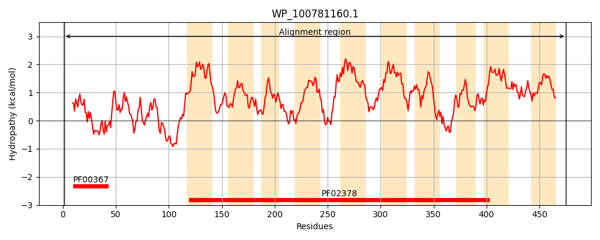
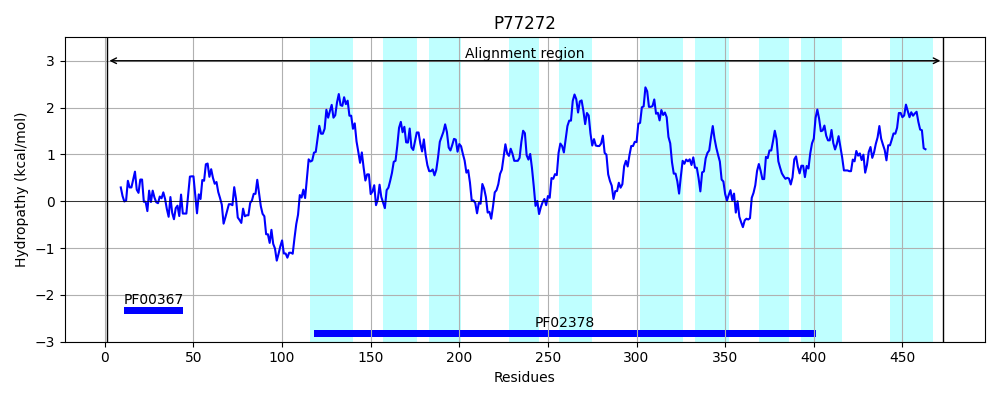
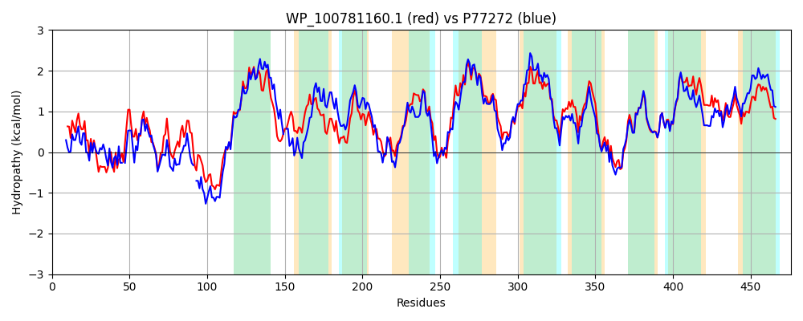

Hit Accession: P77272
Hit TCID: 4.A.1.2.7
Hit Description: gnl|BL_ORD_ID|11495 gnl|TC-DB|P77272|4.A.1.2.7 acid porter, MurP (YfeV) - Escherichia coli.
Mach Len: 476
e:0.000000
Query TMS Count : 10
Hit TMS Count: 10
TMS-Overlap Score: 9.650000
Predicted Substrates:CHEBI:47571;N-acetyl-alpha-D-muramic acid
BLAST Alignment:
Score: 1616 , Bit scores: 627 bits, E-value: 0.0e+00, Alignment length: 476, Percentage identity: 67
Query: 1 MAK-ITKEMIARILAHVGGAANVAQAGNCMTRLRLTLRDESLADSAAIRQIDGVMGVIVSDEQFQVVLGPGKAQTAAEMMNVLLEEAPAAPTLADVAAEKKQALKGKQTSAVQKFLAKFATIFTPLIPGFIAVGLLLGFATLAEQVFVLENAHPNASLVALIGYMKVFSKGMFTFLSILIGYNAQKAFGGSGVNGAIIASLFVLGYNPEATSGFYAGISTFFGHGIDPRGNIIGVLIAVILGAWVERQVRRVMPANLDMILTSAVTLLIMGAVTFTVIMPIGGWLFTGMSWLFLHLNGNPFGSAVLAGLFLLAVMFGVHQGFVPVYFALVDAQGFNSLFPILAMAGAGQVGAALALFWRAKRDSLLRTQIKGAIIPGFLGIGEPLIYGVTLPRMKPFVTACLGGACGGFFVGLIAWLGLPVGLNTVFGPSGLVALPLMTSGSGIYAGMAVYAGGLAVSYLCGFVLTWLFGSKNVDL 475
MAK I+ E++ IL VGG N+A GNCMTRLRL + D SL D I+ ++GV GVI++ +Q QVV GPGKA AA+ M+ LL EAP A++AA+ K+ LK KQTS VQ+FLAKFATIFTPLIPGFIA GLLLG ATL V + A +L + +MKVFSKG+FTFL IL+GYNA +AFGG+GVNGAIIA+LF+LGYNP AT+G+YAG FFG IDPRGNIIGVLIA A +E VRR MP +LDM+LTS +TLLI + + +IMP+GGWLF GMSWLF+HLN NPFG AVLAGLFL+AV+FGVHQGF+PVY AL+D+QGFNSLFPIL+MAGAGQVGAALAL+WRA+ S LR+Q++GAIIPG LG+GEPLIYGVTLPRMKPFVTACLGGA GG F+GLIAW GLP+GLN+ FGPSGLVALPLMTS GI MAVYAGG+ V+++CGF+ T LFG +NV+L
Sbjct: 1 MAKEISSELLNTILTRVGGPGNIASCGNCMTRLRLGVHDSSLVDPN-IKTLEGVKGVILTSDQVQVVFGPGKAHRAAKAMSELLGEAPVQDA-AEIAAQNKRQLKAKQTSGVQQFLAKFATIFTPLIPGFIAAGLLLGIATLIATVMHVP-ADAQGTLPDALNFMKVFSKGLFTFLVILVGYNAAQAFGGTGVNGAIIAALFLLGYNPAATTGYYAGFHDFFGLPIDPRGNIIGVLIAAWACARIEGMVRRFMPDDLDMLLTSLITLLITATLAYLIIMPLGGWLFEGMSWLFMHLNSNPFGCAVLAGLFLIAVVFGVHQGFIPVYLALMDSQGFNSLFPILSMAGAGQVGAALALYWRAQPHSALRSQVRGAIIPGLLGVGEPLIYGVTLPRMKPFVTACLGGAAGGLFIGLIAWWGLPMGLNSAFGPSGLVALPLMTSAQGILPAMAVYAGGILVAWVCGFIFTTLFGCRNVNL 473 | Protein Hydropathy Plots: |
|---|
|  |  |
Pairwise Alignment-Hydropathy Plot:
|
|---|
|  |